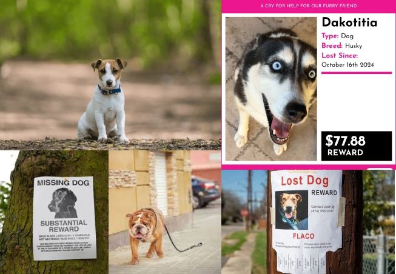
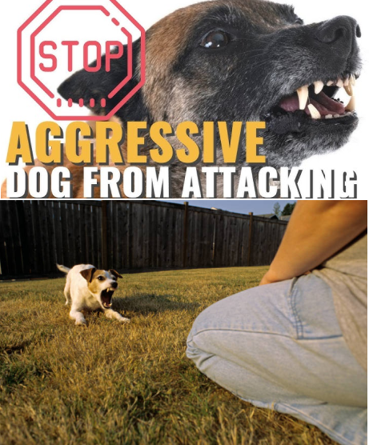
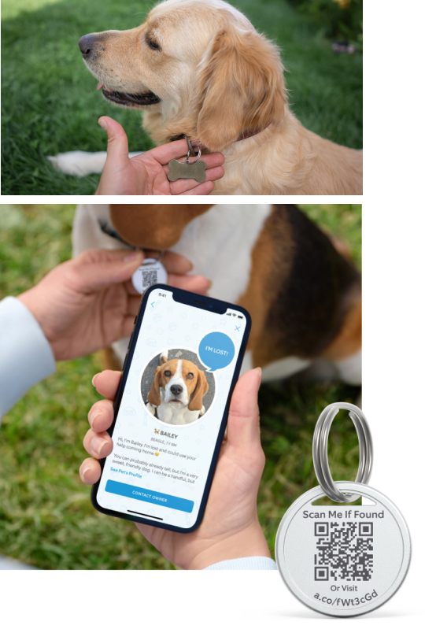
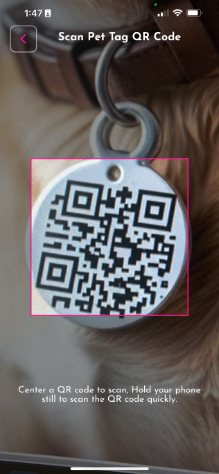
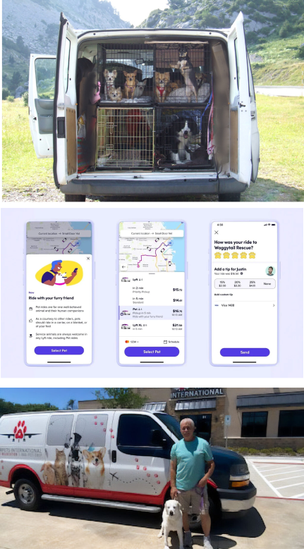
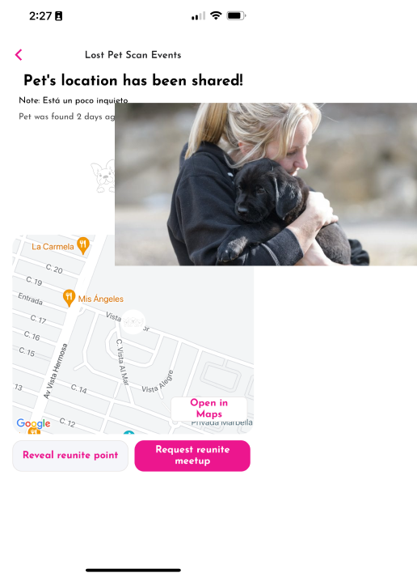

Ask around in your community if anyone has a Lost Pet?
Note the environment. If you’ve spotted a dog in a dangerous location, like by a busy road or in
the middle of the woods, that could indicate that you’ve found someone’s missing pet.

No matter what, always approach a strange pet with caution.
If the pet will not safely cooperate, contact the local police department or animal control right
away to retrieve the pet.
If calm and collected, encourage the peaceful lost animal to approach you.

Check the Lost Animal for any identifying tags, collar, or chip.
Attempt to scan the QR Code on the Tag with your Camera, or Noah's Ark App.
If the Lost Animal ID or Tag contains Owner Contact information, attempt to reach out.

Ensure Lost Animal is approachable, and you are not in danger.
Scan /Tap with your App or via Mobile Camera to access the Lost Pet Profile.
Check Lost Animal’s Behavior notes, commands, and favorite treats.
Report Lost Pet, or Initiate Contact to Lost Pet Owner.

If Lost Pet has Pet Transportation coverage, establish a pick up point and, request Owner to
indicate Pet Transportation to Owner’s desired endpoint.
If Owner has Pet Transportation coverage, and Pet Owner does not indicate an endpoint, Pet Finder
can also set the endpoint as a No Kill Shelter.

MemPet Finder’s may request a reunite point to be set by Pet Owner, or to be revealed by Pet Owner
if already designated on Pet Profile.
Pet Finder may also arrange drop-off at Shelter. If Pet Transportation coverage covers full trip
back home then Pet Owner can request a Pet Transport to their home delivery.
Pet Finder can drop off Lost Pet at No Kill Shelter, and Pet Owner will receive notice of such
event. Pet Owner can organize the pick up.

As a Pet Finder you will be rewarded with Noah’s Ark Pet Rescue points and badges.
As a Pet Finder you may additionally rewarded by Lost Pet Owner’s incentives provided a successful
reunite and Lost Pet has clear incentives.
Dropping off a Shelter spreads the love and complements the Shelter with an in kind donation to help
keep our furry friends alive.
Receive upon Reward Release your PawBucks to a PrePaid Akimbo Card almost instantly.